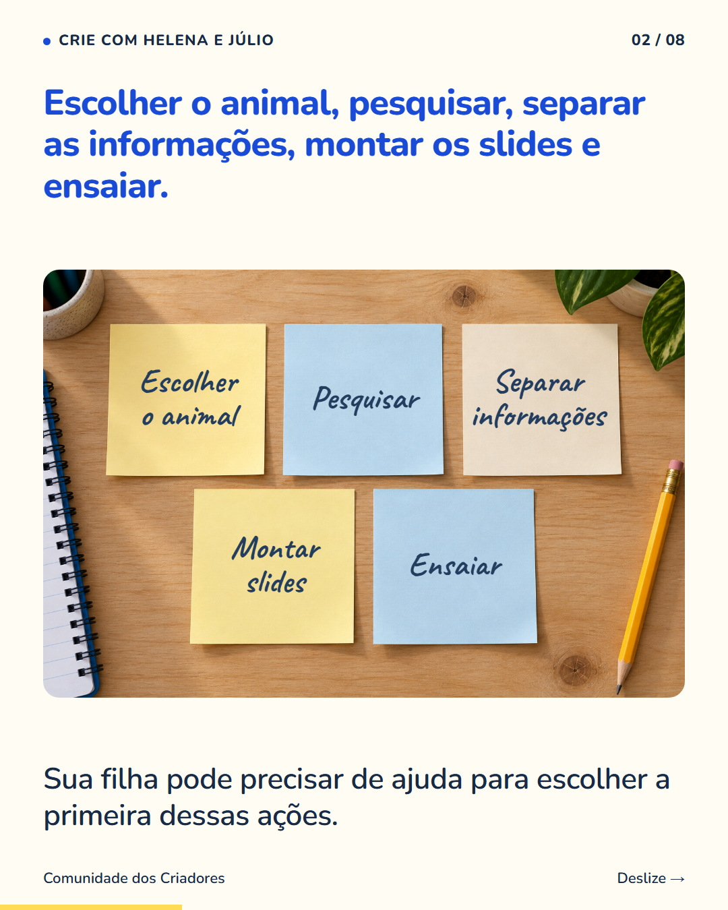
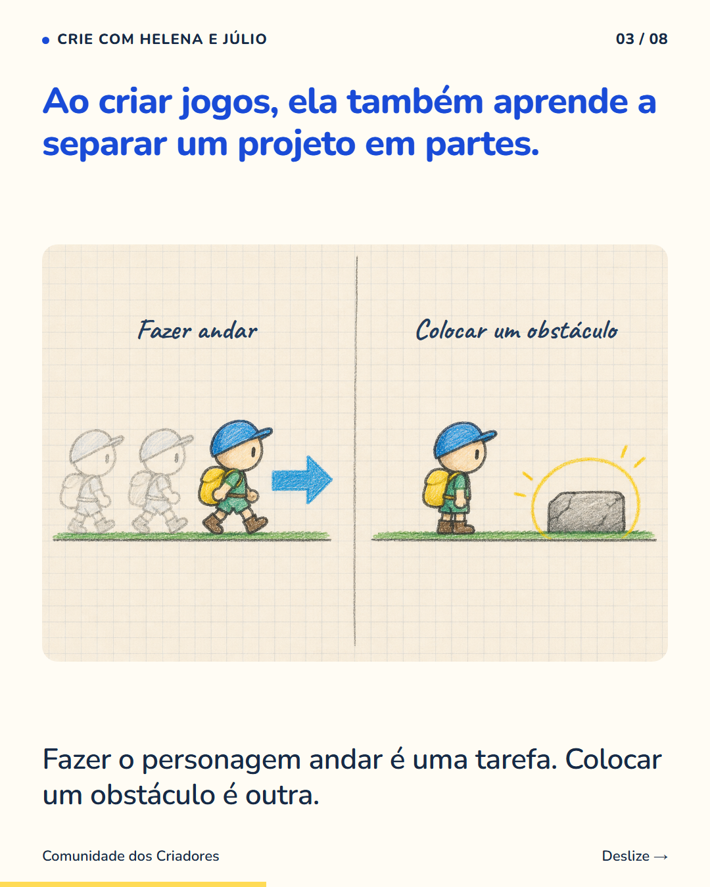
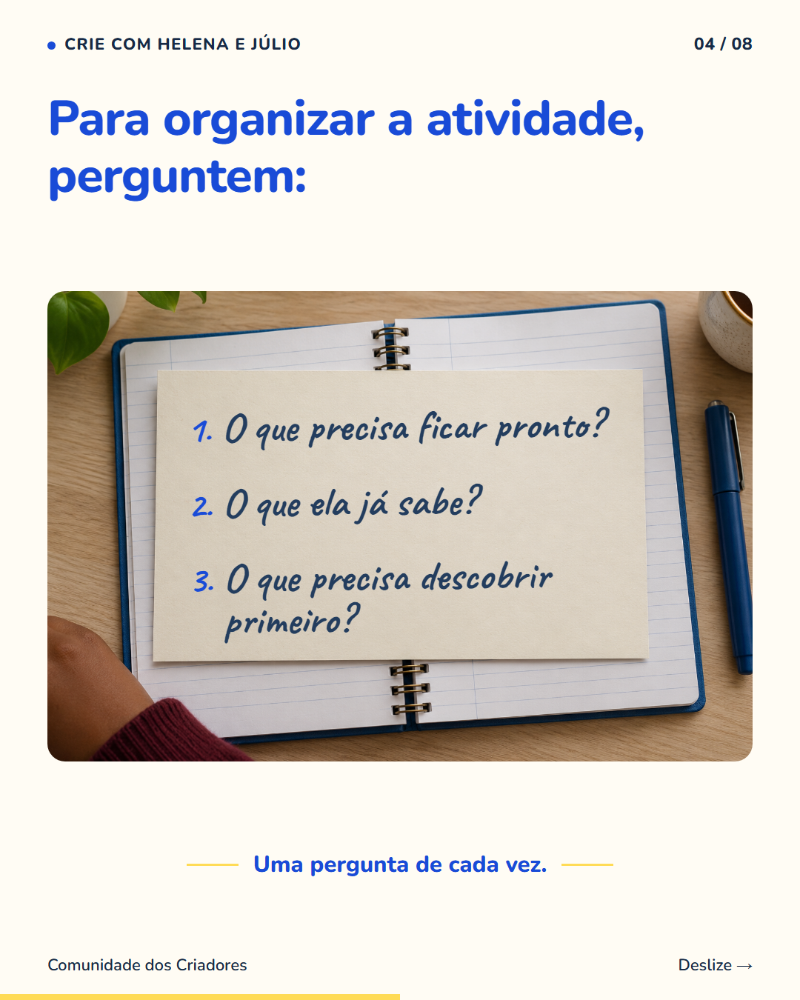
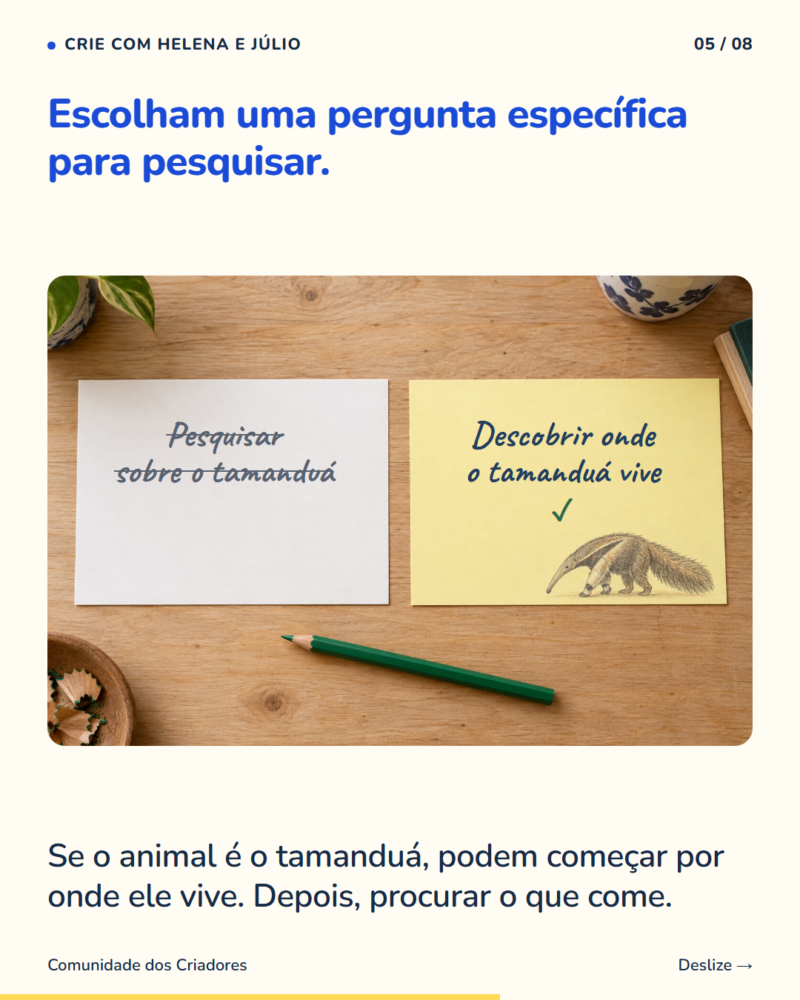
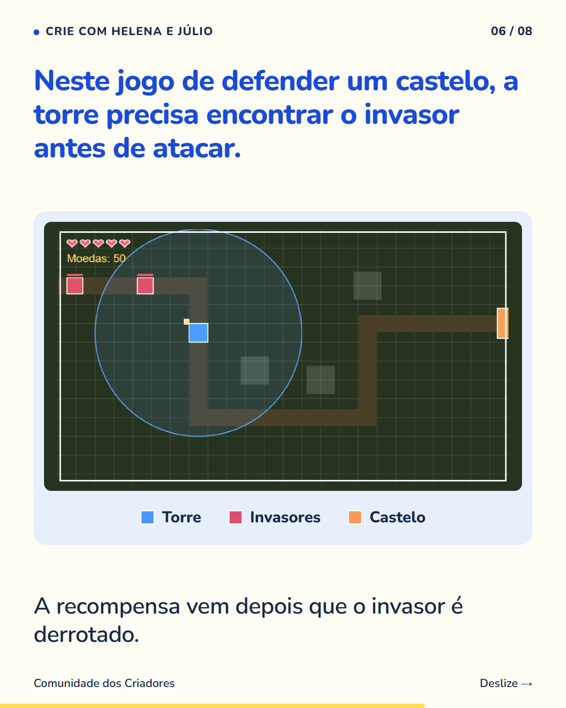
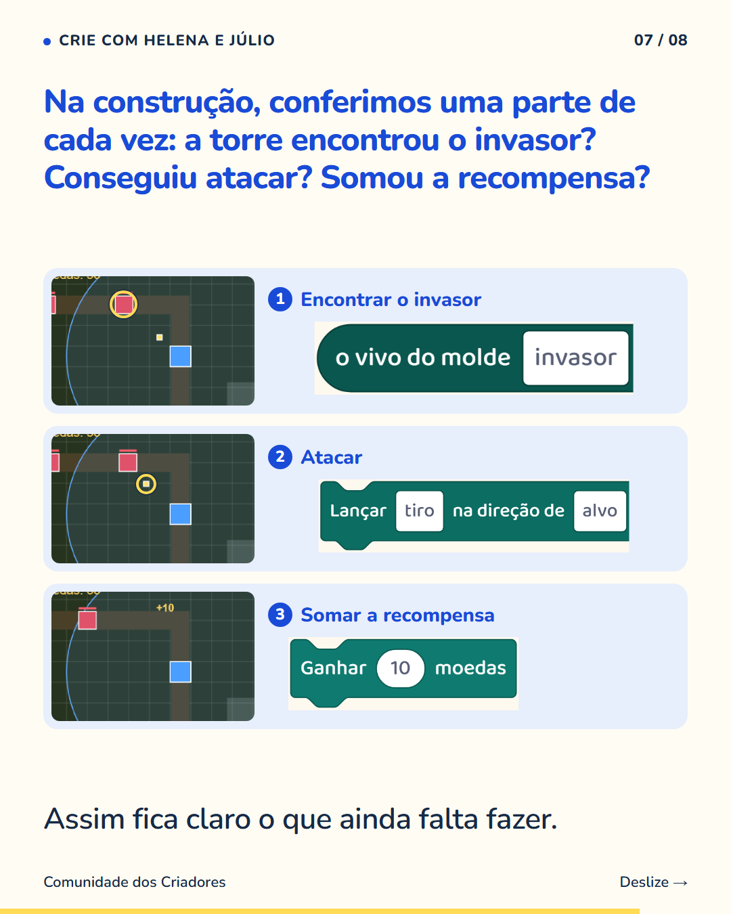
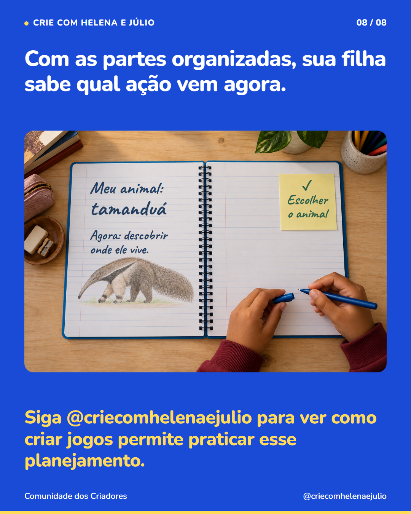

8 slides · 1080 × 1350 · Copy revisada · Separar um projeto em tarefas







“Fazer o trabalho” pode ser um pedido grande demais para orientar a primeira ação. Leiam juntos a tarefa da escola e escrevam as partes que precisam ficar prontas. Num trabalho sobre um animal, pesquisar onde ele vive vem antes de escolher como mostrar essa informação nos slides. Isso também faz parte da criação de jogos. Na defesa do castelo do nosso exemplo, primeiro a torre precisa encontrar o invasor. Depois pode atacar. Quando ele é derrotado, entra a recompensa. Conferimos cada ação antes de avançar. A criança pratica escolher uma ordem e verificar uma etapa por vez. Em casa, uma lista curta pode ajudar sua filha a enxergar o que já fez e o que falta. Siga @criecomhelenaejulio para ver como criar jogos permite praticar esse planejamento.